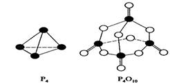

白磷与氧可发生如下反应：P4+5O2=P4O10。已知断裂下列化学键需要 吸收的能量分别为
：P—P akJ·mol—1.P—O bkJ·mol—1.P=O ckJ·mol—1.O=O dkJ·mol—1。

根据图示的分子结构和有关数据估算该反应的△H，其中正确的是（ ）。
A.（6a+5d－4c－12b）kJ·mol—1
B.（4c+12b－6a－5d）kJ·mol—1
C.（4c+12b－4a－5d）kJ·mol—1